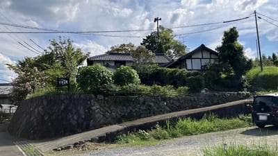
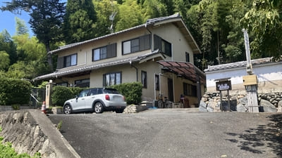
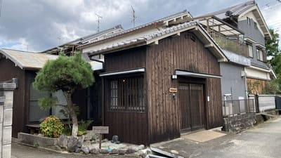
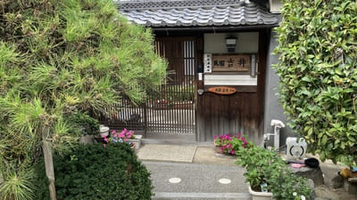
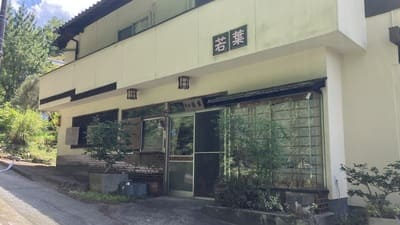
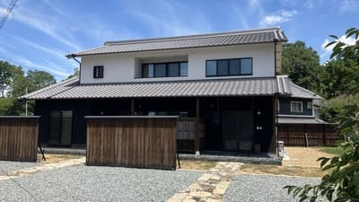
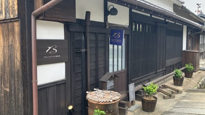
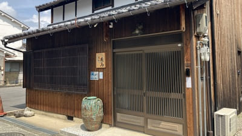

明日香村 泊まるマップ
ご利用案内
明日香村内の宿泊施設の一覧です。古民家宿、民宿、ペンションなど、明日香での滞在先探しにご利用ください。
※各カードをクリックすると、上のマップが該当施設の位置に移動します。最新の宿泊情報は各施設にご確認ください。
宿泊施設

1 カフェ＆ペンション飛鳥
明日香村の自然に囲まれた小さな宿。旬の食材を使った料理と、緑を望む客室でゆったり過ごせます。

2 古都里庵
一日一組限定の貸切古民家宿。広々とした一軒家と檜風呂で、明日香村の静かな時間を楽しめます。

3 まほろの宿
古民家の趣を残して改修した一日一組限定の一棟貸し宿。明日香で暮らすように過ごせます。

4 Ｂ＆Ｂ Ａｓｕｋａ
明日香の中心にあるB&B。和の外観と英国アンティーク家具の洋風空間で、朝食とともにゆったり過ごせます。

5 Asuka no yado -明日香の宿-
和モダンな一軒家を利用した隠れ家的な宿。庭と縁側のある空間で、明日香の一日をゆっくり楽しめます。

6 民宿吉井靖亨
明日香村の中心部に位置する家庭的な民宿。観光地へのアクセスにも便利で、ゆっくり滞在できます。

7 民宿 若葉
岡寺参道沿いに建つ静かな民宿。名物料理と温かな宿主のおもてなしで、明日香らしい滞在を楽しめます。

8 BRANCHERA 石舞台TERRACE -ブランシエラ 石舞台テラス-
石舞台古墳を間近に望む全5室の宿。テラス付きの客室と地元食材の料理で、明日香を五感で楽しめます。

9 女性専用ゲストハウス月舟庵 Female-only Guest House, Tsukifunean
一組貸切の女性専用ゲストハウス。木のぬくもりある空間と充実した設備で、最大8名まで宿泊できます。

10 BRANCHERA VILLA ASUKA ブランシエラ ヴィラ明日香
築150年以上の古民家を活用した登録有形文化財の宿。広々とした客室と庭で、歴史ある明日香を満喫できます。

11 えん飛鳥
明日香村の自然と歴史に囲まれて過ごせる宿。観光で訪れた村を、ゆっくりと身近に感じられる滞在が楽しめます。